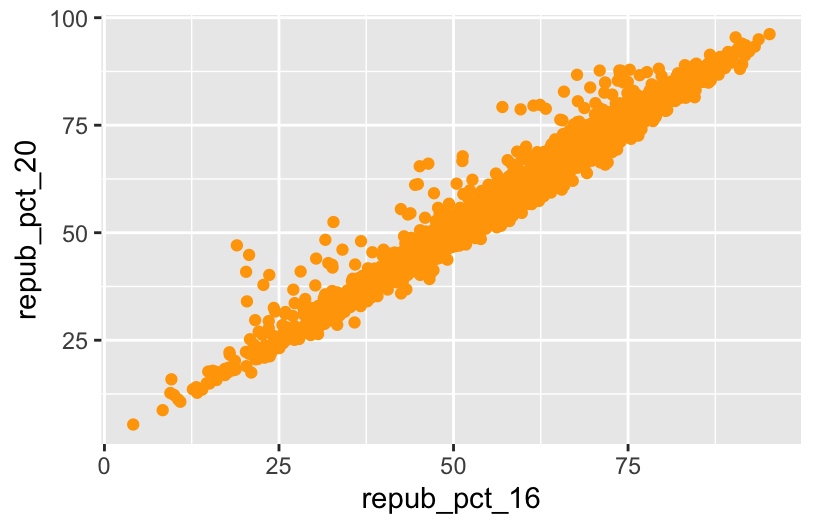
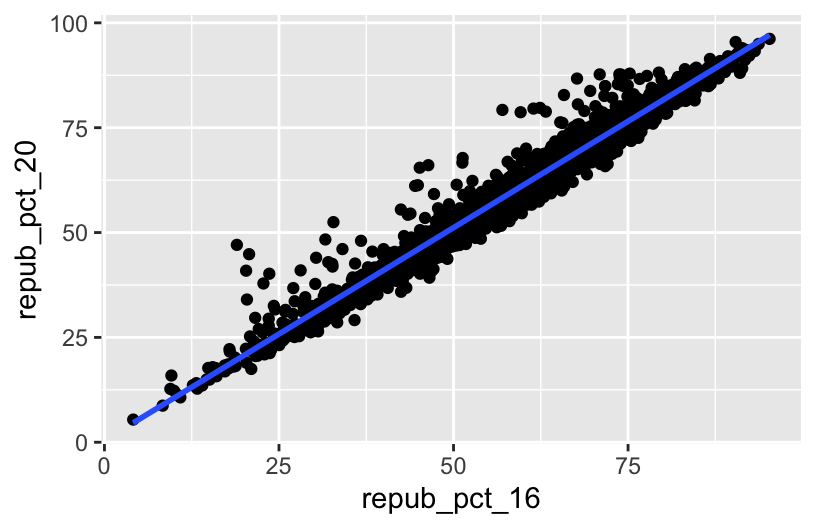
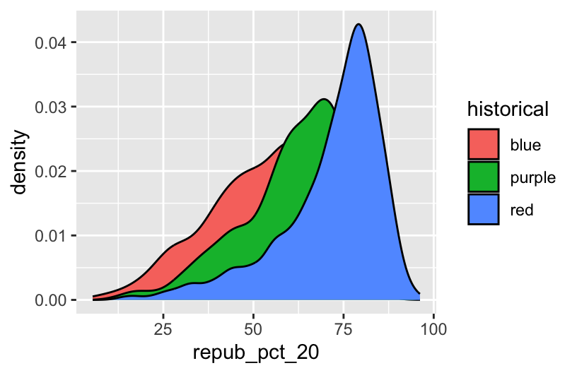
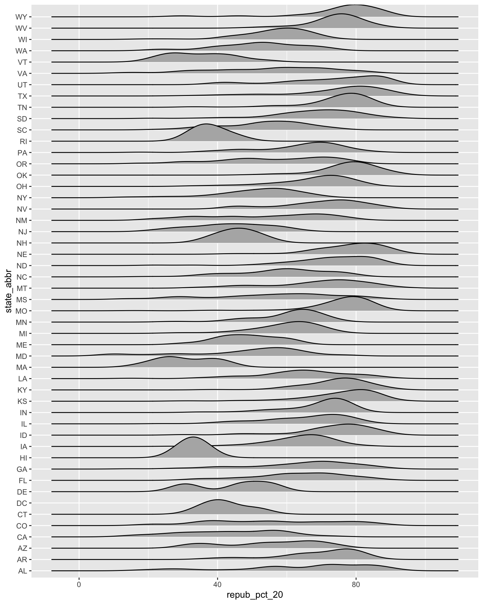
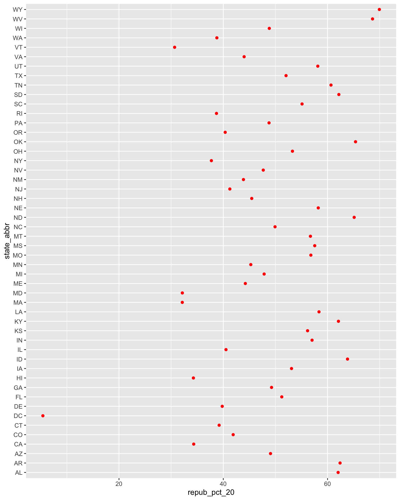
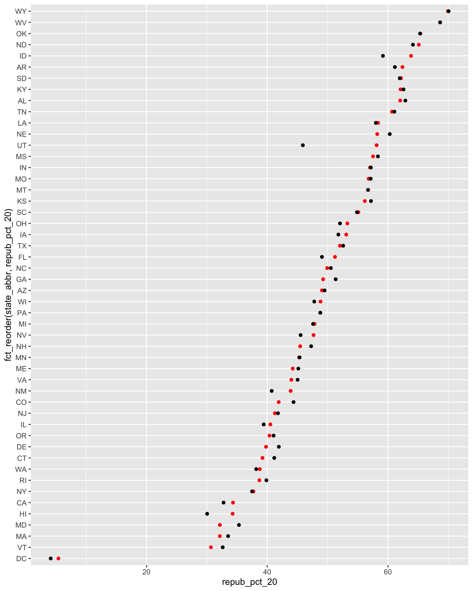

Use this file for practice with the bivariate viz in-class activity. Refer to the class website for details.
10.0.1 General guidance for building bivariate plots
As with univariate plots, an appropriate visualization for the relationship between 2 variables depends upon whether the variables are quantitative or categorical. In general:
Each quantitative variable requires a new axis (or a quantitative scale if we run out of axes).
Each categorical variable requires a new way to “group” the graphic (eg: using colors, shapes, separate facets, etc)
For visualizations in which overlap in glyphs or plots obscures the patterns, try faceting or transparency.
10.1 Exercises (required)
Github user Tony McGovern has compiled and made available 2020/2016/2012 presidential election results for most of 3000+ U.S. counties, except Alaska. (Image: Wikimedia Commons)
A wrangled version of this data, is imported below, after being combined with:
2013 county-level demographics from the df_county_demographics data set from the choroplethr R package
# Load dataelections <-read.csv("https://mac-stat.github.io/data/election_2020_county.csv")# Check it outhead(elections)
state_name state_abbr historical county_name county_fips total_votes_20
1 Alabama AL red Autauga County 1001 27770
2 Alabama AL red Baldwin County 1003 109679
3 Alabama AL red Barbour County 1005 10518
4 Alabama AL red Bibb County 1007 9595
5 Alabama AL red Blount County 1009 27588
6 Alabama AL red Bullock County 1011 4613
repub_pct_20 dem_pct_20 winner_20 total_votes_16 repub_pct_16 dem_pct_16
1 71.44 27.02 repub 24661 73.44 23.96
2 76.17 22.41 repub 94090 77.35 19.57
3 53.45 45.79 repub 10390 52.27 46.66
4 78.43 20.70 repub 8748 76.97 21.42
5 89.57 9.57 repub 25384 89.85 8.47
6 24.84 74.70 dem 4701 24.23 75.09
winner_16 total_votes_12 repub_pct_12 dem_pct_12 winner_12 total_population
1 repub 23909 72.63 26.58 repub 54907
2 repub 84988 77.39 21.57 repub 187114
3 repub 11459 48.34 51.25 dem 27321
4 repub 8391 73.07 26.22 repub 22754
5 repub 23980 86.49 12.35 repub 57623
6 dem 5318 23.51 76.31 dem 10746
percent_white percent_black percent_asian percent_hispanic per_capita_income
1 76 18 1 2 24571
2 83 9 1 4 26766
3 46 46 0 5 16829
4 75 22 0 2 17427
5 88 1 0 8 20730
6 22 71 0 6 18628
median_rent median_age
1 668 37.5
2 693 41.5
3 382 38.3
4 351 39.4
5 403 39.6
6 276 39.6
We’ll use this data to explore voting outcomes within the U.S.’s 2-party system. Here’s a list of candidates by year:
year
Republican candidate
Democratic candidate
2020
Donald Trump
Joe Biden
2016
Donald Trump
Hillary Clinton
2012
Mitt Romney
Barack Obama
Exercise 0: Review
Part a
How many, or roughly what percent, of the 3000+ counties did the Republican candidate win in 2020?
Take a guess.
Then make a plot of the winner variable.
Then discuss what follow-up questions you might have (and that our data might help us answer).
Part b
The repub_pct_20 variable provides more detail about the Republican support in each county. Construct a plot of repub_pct_20.
Notice that the distribution of Republican support from county to county is slightly left skewed or negatively skewed.
What follow-up questions do you have?
# Import datasurvey <-read.csv("https://hash-mac.github.io/stat112site-s25/data/survey.csv")# How many students have now filled out the survey?nrow(survey)
[1] 49
# What type of variables do we have?str(survey)
'data.frame': 49 obs. of 4 variables:
$ cafe_mac : chr "mashed potatoes" "is tasty" "burger" "caesar salad" ...
$ minutes_to_campus: int 5 5 5 12 0 10 5 0 0 5 ...
$ fav_temp_c : num 26 28 19 18 24 -10 21 25 18 25 ...
$ hangout : chr "the mountains" "a city" "a forest" "a forest" ...
# Load dataelections <-read.csv("https://mac-stat.github.io/data/election_2020_county.csv")# Check it outhead(elections)
state_name state_abbr historical county_name county_fips total_votes_20
1 Alabama AL red Autauga County 1001 27770
2 Alabama AL red Baldwin County 1003 109679
3 Alabama AL red Barbour County 1005 10518
4 Alabama AL red Bibb County 1007 9595
5 Alabama AL red Blount County 1009 27588
6 Alabama AL red Bullock County 1011 4613
repub_pct_20 dem_pct_20 winner_20 total_votes_16 repub_pct_16 dem_pct_16
1 71.44 27.02 repub 24661 73.44 23.96
2 76.17 22.41 repub 94090 77.35 19.57
3 53.45 45.79 repub 10390 52.27 46.66
4 78.43 20.70 repub 8748 76.97 21.42
5 89.57 9.57 repub 25384 89.85 8.47
6 24.84 74.70 dem 4701 24.23 75.09
winner_16 total_votes_12 repub_pct_12 dem_pct_12 winner_12 total_population
1 repub 23909 72.63 26.58 repub 54907
2 repub 84988 77.39 21.57 repub 187114
3 repub 11459 48.34 51.25 dem 27321
4 repub 8391 73.07 26.22 repub 22754
5 repub 23980 86.49 12.35 repub 57623
6 dem 5318 23.51 76.31 dem 10746
percent_white percent_black percent_asian percent_hispanic per_capita_income
1 76 18 1 2 24571
2 83 9 1 4 26766
3 46 46 0 5 16829
4 75 22 0 2 17427
5 88 1 0 8 20730
6 22 71 0 6 18628
median_rent median_age
1 668 37.5
2 693 41.5
3 382 38.3
4 351 39.4
5 403 39.6
6 276 39.6
Exercise 1: quantitative vs quantitative intuition check
See next exercise.
Exercise 2: 2 quantitiative variables
# Set up the plotting frame# How does this differ than the frame for our histogram of repub_pct_20 alone?# ANSWER: we added a y-axis variableggplot(elections, aes(y = repub_pct_20, x = repub_pct_16))
# Add a layer of points for each county# Take note of the geom: geom_pointggplot(elections, aes(y = repub_pct_20, x = repub_pct_16)) +geom_point()
# Change the shape of the points# What happens if you change the shape to another number?ggplot(elections, aes(y = repub_pct_20, x = repub_pct_16)) +geom_point(shape =3)
# YOU TRY: Modify the code to make the points "orange"# NOTE: Try to anticipate if "color" or "fill" will be useful here. Then try both.ggplot(elections, aes(y = repub_pct_20, x = repub_pct_16)) +geom_point(color ="orange")

# Add a layer that represents each county by the state it's in# Take note of the geom and the info it needs to run!ggplot(elections, aes(y = repub_pct_20, x = repub_pct_16)) +geom_text(aes(label = state_abbr))
Exercise 3: Reflect
the higher the Republican support in 2016, the higher it was in 2020. There are some counties in Texas and Utah where the R support in 2020 was disproportionately higher than in 2016.
Exercise 4: Visualizing trend
ggplot(elections, aes(y = repub_pct_20, x = repub_pct_16)) +geom_point() +geom_smooth()
Part a
ggplot(elections, aes(y = repub_pct_20, x = repub_pct_16)) +geom_smooth()
Part b
ggplot(elections, aes(y = repub_pct_20, x = repub_pct_16)) +geom_point() +geom_smooth(method ="lm")

Exercise 5: Your turn
There’s a moderate, positive association between R support and median age – the older the average age in a county, the higher the R support tends to be. However, there’s a stronger, negative association between R support and median rent – the higher the rent (a proxy for cost of living), the lower the R support tends to be.
# Scatterplot of repub_pct_20 vs median_rentggplot(elections, aes(y = repub_pct_20, x = median_rent)) +geom_point()
# Scatterplot of repub_pct_20 vs median_ageggplot(elections, aes(y = repub_pct_20, x = median_age)) +geom_point()
Exercise 6: A sad scatterplot
See next exercise.
Exercise 7: quantitative vs categorical – violins & boxes
There’s quite a bit of range in county-level R support within blue, purple, and red states. However, R support tends to be higher in red states and lower in blue states.
Exercise 8: quantitative vs categorical – intuition check
See next exercise.
Exercise 9: quantitative vs categorical – density plots
# The colors used don't match up with the blue, purple, red labels# The density plots are on top of each otherggplot(elections, aes(x = repub_pct_20, fill = historical)) +geom_density()

# scale_fill_manual "hard codes" or defines what colors to use for the fill categoriesggplot(elections, aes(x = repub_pct_20, fill = historical)) +geom_density() +scale_fill_manual(values =c("blue", "purple", "red"))
# alpha = 0.5 adds transparency# the closer alpha is to 0, the more transparent.# the closer alpha is to 1, the more opaque.ggplot(elections, aes(x = repub_pct_20, fill = historical)) +geom_density(alpha =0.5) +scale_fill_manual(values =c("blue", "purple", "red"))
# facet_wrap separates the density plots into "facets" for each historical groupggplot(elections, aes(x = repub_pct_20, fill = historical)) +geom_density() +scale_fill_manual(values =c("blue", "purple", "red")) +facet_wrap(~ historical)
# Let's try a similar grouping strategy with a histogram instead of density plot.# Why is this terrible?ggplot(elections, aes(x = repub_pct_20, fill = historical)) +geom_histogram(color ="white") +scale_fill_manual(values =c("blue", "purple", "red"))
Exercise 10
One pro of density plots relative to boxplots: doesn’t oversimplify the data / boil the data down to just 5 numbers.
Name one con of density plots relative to boxplots: boxplots can be easier to interpret
Exercise 11: categorical vs categorical intuition check
see exercise below
Exercise 12: categorical vs categorical
# A stacked bar plot# historical = x axis / bar categories# winner_20 = fills the barsggplot(elections, aes(x = historical, fill = winner_20)) +geom_bar()
# A faceted bar plotggplot(elections, aes(x = winner_20)) +geom_bar() +facet_wrap(~ historical)
# A side-by-side bar plot# Note the new argument to geom_barggplot(elections, aes(x = historical, fill = winner_20)) +geom_bar(position ="dodge")
# A proportional bar plot# Note the new argument to geom_barggplot(elections, aes(x = historical, fill = winner_20)) +geom_bar(position ="fill")
Part a
pro = easier to compare the relative outcomes in blue vs purple vs red states con = lose track of how many counties fall into blue vs purple vs red states
Exercise 13: Practice (now or later)
weather <-read.csv("https://mac-stat.github.io/data/weather_3_locations.csv")# How do 3pm temperatures (temp3pm) differ by location?ggplot(weather, aes(x = temp3pm, fill = location)) +geom_density(alpha =0.5)
ggplot(weather, aes(y = temp3pm, x = location)) +geom_boxplot()
# How might we predict the 3pm temperature (temp3pm) by the 9am temperature (temp9am)?ggplot(weather, aes(y = temp3pm, x = temp9am)) +geom_point()
# How do the number of rainy days (raintoday) differ by location?ggplot(weather, aes(x = location, fill = raintoday)) +geom_bar()
Optional exercise 1: Dealing with lots of categories
# Install ggridges packagelibrary(ggridges)# Make our first joy plot# THINK: What DON'T you like about this?ggplot(elections, aes(x = repub_pct_20, y = state_abbr)) +geom_density_ridges()

# Let's put the states in order by Republican support, not alphabet# How do you think fct_reorder works? We'll learn about this later in the semester.ggplot(elections, aes(x = repub_pct_20, y =fct_reorder(state_abbr, repub_pct_20))) +geom_density_ridges(alpha =0.5)
# YOUR TURN: color/fill the ridges according to a state's historical voting patterns # and add meaningful axis labelsggplot(elections, aes(x = repub_pct_20, y =fct_reorder(state_abbr, repub_pct_20), fill = historical)) +geom_density_ridges(alpha =0.5) +labs(y ="state", x ="2020 Republican support (%)") +scale_fill_manual(values =c("blue", "purple", "red"))
Optional exercise 2: total outcomes by state
elections_by_state <-read.csv("https://mac-stat.github.io/data/election_2020_by_state.csv")ggplot(elections_by_state, aes(y = repub_pct_20, x = repub_pct_16)) +geom_point()
# YOU TRY# Start by creating a "scatterplot" of state_abbr (y-axis) by 2020 Republican support on the x-axis# Color the points redggplot(elections_by_state, aes(x = repub_pct_20, y = state_abbr)) +geom_point(color ="red")

# YOU TRY# Reorder the states in terms of their 2020 Republican support (not alphabet)ggplot(elections_by_state, aes(x = repub_pct_20, y =fct_reorder(state_abbr, repub_pct_20))) +geom_point(color ="red")
# Finally, add ANOTHER layer of points for the 2016 outcomes# What info does this new geom_point() layer need to run?ggplot(elections_by_state, aes(x = repub_pct_20, y =fct_reorder(state_abbr, repub_pct_20))) +geom_point(color ="red") +geom_point(aes(x = repub_pct_16, y = state_abbr))

Source Code
---title: "Bivariate Viz"---Use this file for practice with the **bivariate viz** in-class activity. Refer to the class website for details.---title: "Bivariate Viz"number-sections: trueexecute: warning: falsefig-height: 2.75fig-width: 4.25fig-env: 'figure'fig-pos: 'h'fig-align: centercode-fold: false---### General guidance for building bivariate plotsAs with univariate plots, an appropriate visualization for the relationship between 2 variables depends upon whether the variables are **quantitative** or **categorical**. In general:- Each **quantitative variable** requires a new *axis* (or a quantitative *scale* if we run out of axes).- Each **categorical variable** requires a new way to "group" the graphic (eg: using colors, shapes, separate facets, etc)- For visualizations in which **overlap** in glyphs or plots obscures the patterns, try faceting or transparency.## Exercises (required)[Github user Tony McGovern](https://github.com/tonmcg/US_County_Level_Election_Results_08-20) has compiled and made available 2020/2016/2012 presidential election results for most of 3000+ U.S. counties, except Alaska. (Image: [Wikimedia Commons](https://commons.wikimedia.org/wiki/File:Map_of_USA_with_county_outlines_(black_%26_white).png))A wrangled version of this data, is imported below, after being combined with:- 2013 county-level demographics from the `df_county_demographics` data set from the `choroplethr` R package- historical voting trends in the state in which the county falls (from <https://www.270towin.com/content/blue-and-red-states>): - red = consistently Republican - blue = consistently Democratic - purple = something in between```{r}# Load dataelections <-read.csv("https://mac-stat.github.io/data/election_2020_county.csv")# Check it outhead(elections)```We'll use this data to explore voting outcomes within the U.S.'s 2-party system. Here's a list of candidates by year:| year | Republican candidate | Democratic candidate ||:-----|:---------------------|:---------------------|| 2020 | Donald Trump | Joe Biden || 2016 | Donald Trump | Hillary Clinton || 2012 | Mitt Romney | Barack Obama |### Exercise 0: Review {.unnumbered}#### Part a {.unnumbered}How many, or roughly what percent, of the 3000+ counties did the Republican candidate win in 2020?- Take a guess.- Then make a plot of the `winner` variable.- Then discuss what follow-up questions you might have (and that our data might help us answer).```{r}```#### Part b {.unnumbered}The `repub_pct_20` variable provides more detail about the Republican support in each county. Construct a plot of `repub_pct_20`.Notice that the distribution of Republican support from county to county is slightly **left skewed** or **negatively skewed**.What follow-up questions do you have?```{r}# Import datasurvey <-read.csv("https://hash-mac.github.io/stat112site-s25/data/survey.csv")# How many students have now filled out the survey?nrow(survey)# What type of variables do we have?str(survey)``````{r}# Load dataelections <-read.csv("https://mac-stat.github.io/data/election_2020_county.csv")# Check it outhead(elections)```### Exercise 0:```{r}library(tidyverse)ggplot(elections, aes(x = winner_20)) +geom_bar()ggplot(elections, aes(x = repub_pct_20)) +geom_histogram(color ="white")ggplot(elections, aes(x = repub_pct_20)) +geom_density()```### Exercise 1: quantitative vs quantitative intuition check {.unnumbered}See next exercise.### Exercise 2: 2 quantitiative variables {.unnumbered}```{r}# Set up the plotting frame# How does this differ than the frame for our histogram of repub_pct_20 alone?# ANSWER: we added a y-axis variableggplot(elections, aes(y = repub_pct_20, x = repub_pct_16))# Add a layer of points for each county# Take note of the geom: geom_pointggplot(elections, aes(y = repub_pct_20, x = repub_pct_16)) +geom_point()# Change the shape of the points# What happens if you change the shape to another number?ggplot(elections, aes(y = repub_pct_20, x = repub_pct_16)) +geom_point(shape =3)# YOU TRY: Modify the code to make the points "orange"# NOTE: Try to anticipate if "color" or "fill" will be useful here. Then try both.ggplot(elections, aes(y = repub_pct_20, x = repub_pct_16)) +geom_point(color ="orange")# Add a layer that represents each county by the state it's in# Take note of the geom and the info it needs to run!ggplot(elections, aes(y = repub_pct_20, x = repub_pct_16)) +geom_text(aes(label = state_abbr))```### Exercise 3: Reflect {.unnumbered}the higher the Republican support in 2016, the higher it was in 2020. There are some counties in Texas and Utah where the R support in 2020 was disproportionately higher than in 2016.### Exercise 4: Visualizing trend {.unnumbered}```{r}ggplot(elections, aes(y = repub_pct_20, x = repub_pct_16)) +geom_point() +geom_smooth()```#### Part a {.unnumbered}```{r}ggplot(elections, aes(y = repub_pct_20, x = repub_pct_16)) +geom_smooth()```#### Part b {.unnumbered}```{r}ggplot(elections, aes(y = repub_pct_20, x = repub_pct_16)) +geom_point() +geom_smooth(method ="lm")```### Exercise 5: Your turn {.unnumbered}There's a moderate, positive association between R support and median age -- the older the average age in a county, the higher the R support tends to be. However, there's a stronger, *negative* association between R support and median rent -- the higher the rent (a proxy for cost of living), the lower the R support tends to be.```{r}# Scatterplot of repub_pct_20 vs median_rentggplot(elections, aes(y = repub_pct_20, x = median_rent)) +geom_point() # Scatterplot of repub_pct_20 vs median_ageggplot(elections, aes(y = repub_pct_20, x = median_age)) +geom_point() ```### Exercise 6: A sad scatterplot {.unnumbered}See next exercise.### Exercise 7: quantitative vs categorical -- violins & boxes {.unnumbered}```{r }# Side-by-side violin plotsggplot(elections, aes(y = repub_pct_20, x = historical)) + geom_violin()# Side-by-side boxplots (defined below)ggplot(elections, aes(y = repub_pct_20, x = historical)) + geom_boxplot()```**REFLECT:**There's quite a bit of range in county-level R support within blue, purple, and red states. However, R support tends to be higher in red states and lower in blue states.### Exercise 8: quantitative vs categorical -- intuition check {.unnumbered}See next exercise.### Exercise 9: quantitative vs categorical -- density plots {.unnumbered}```{r}# The colors used don't match up with the blue, purple, red labels# The density plots are on top of each otherggplot(elections, aes(x = repub_pct_20, fill = historical)) +geom_density()# scale_fill_manual "hard codes" or defines what colors to use for the fill categoriesggplot(elections, aes(x = repub_pct_20, fill = historical)) +geom_density() +scale_fill_manual(values =c("blue", "purple", "red"))# alpha = 0.5 adds transparency# the closer alpha is to 0, the more transparent.# the closer alpha is to 1, the more opaque.ggplot(elections, aes(x = repub_pct_20, fill = historical)) +geom_density(alpha =0.5) +scale_fill_manual(values =c("blue", "purple", "red"))# facet_wrap separates the density plots into "facets" for each historical groupggplot(elections, aes(x = repub_pct_20, fill = historical)) +geom_density() +scale_fill_manual(values =c("blue", "purple", "red")) +facet_wrap(~ historical)# Let's try a similar grouping strategy with a histogram instead of density plot.# Why is this terrible?ggplot(elections, aes(x = repub_pct_20, fill = historical)) +geom_histogram(color ="white") +scale_fill_manual(values =c("blue", "purple", "red"))```### Exercise 10 {.unnumbered}- One pro of density plots relative to boxplots: doesn't oversimplify the data / boil the data down to just 5 numbers.- Name one con of density plots relative to boxplots: boxplots can be easier to interpret### Exercise 11: categorical vs categorical intuition check {.unnumbered}see exercise below### Exercise 12: categorical vs categorical {.unnumbered}```{r}# A stacked bar plot# historical = x axis / bar categories# winner_20 = fills the barsggplot(elections, aes(x = historical, fill = winner_20)) +geom_bar()# A faceted bar plotggplot(elections, aes(x = winner_20)) +geom_bar() +facet_wrap(~ historical)# A side-by-side bar plot# Note the new argument to geom_barggplot(elections, aes(x = historical, fill = winner_20)) +geom_bar(position ="dodge")# A proportional bar plot# Note the new argument to geom_barggplot(elections, aes(x = historical, fill = winner_20)) +geom_bar(position ="fill")```#### Part a {.unnumbered}pro = easier to compare the relative outcomes in blue vs purple vs red states con = lose track of how many counties fall into blue vs purple vs red states### Exercise 13: Practice (now or later) {.unnumbered}```{r}weather <-read.csv("https://mac-stat.github.io/data/weather_3_locations.csv")# How do 3pm temperatures (temp3pm) differ by location?ggplot(weather, aes(x = temp3pm, fill = location)) +geom_density(alpha =0.5)ggplot(weather, aes(y = temp3pm, x = location)) +geom_boxplot()# How might we predict the 3pm temperature (temp3pm) by the 9am temperature (temp9am)?ggplot(weather, aes(y = temp3pm, x = temp9am)) +geom_point()# How do the number of rainy days (raintoday) differ by location?ggplot(weather, aes(x = location, fill = raintoday)) +geom_bar()```### Optional exercise 1: Dealing with lots of categories {.unnumbered}```{r fig.height = 10, fig.width = 8}# Install ggridges packagelibrary(ggridges)# Make our first joy plot# THINK: What DON'T you like about this?ggplot(elections, aes(x = repub_pct_20, y = state_abbr)) + geom_density_ridges()# Let's put the states in order by Republican support, not alphabet# How do you think fct_reorder works? We'll learn about this later in the semester.ggplot(elections, aes(x = repub_pct_20, y = fct_reorder(state_abbr, repub_pct_20))) + geom_density_ridges(alpha = 0.5)# YOUR TURN: color/fill the ridges according to a state's historical voting patterns # and add meaningful axis labelsggplot(elections, aes(x = repub_pct_20, y = fct_reorder(state_abbr, repub_pct_20), fill = historical)) + geom_density_ridges(alpha = 0.5) + labs(y = "state", x = "2020 Republican support (%)") + scale_fill_manual(values = c("blue", "purple", "red"))```### Optional exercise 2: total outcomes by state {.unnumbered}```{r fig.height = 10, fig.width = 8}elections_by_state <- read.csv("https://mac-stat.github.io/data/election_2020_by_state.csv")ggplot(elections_by_state, aes(y = repub_pct_20, x = repub_pct_16)) + geom_point()# YOU TRY# Start by creating a "scatterplot" of state_abbr (y-axis) by 2020 Republican support on the x-axis# Color the points redggplot(elections_by_state, aes(x = repub_pct_20, y = state_abbr)) + geom_point(color = "red")# YOU TRY# Reorder the states in terms of their 2020 Republican support (not alphabet)ggplot(elections_by_state, aes(x = repub_pct_20, y = fct_reorder(state_abbr, repub_pct_20))) + geom_point(color = "red")# Finally, add ANOTHER layer of points for the 2016 outcomes# What info does this new geom_point() layer need to run?ggplot(elections_by_state, aes(x = repub_pct_20, y = fct_reorder(state_abbr, repub_pct_20))) + geom_point(color = "red") + geom_point(aes(x = repub_pct_16, y = state_abbr))```


.png){kind=link}